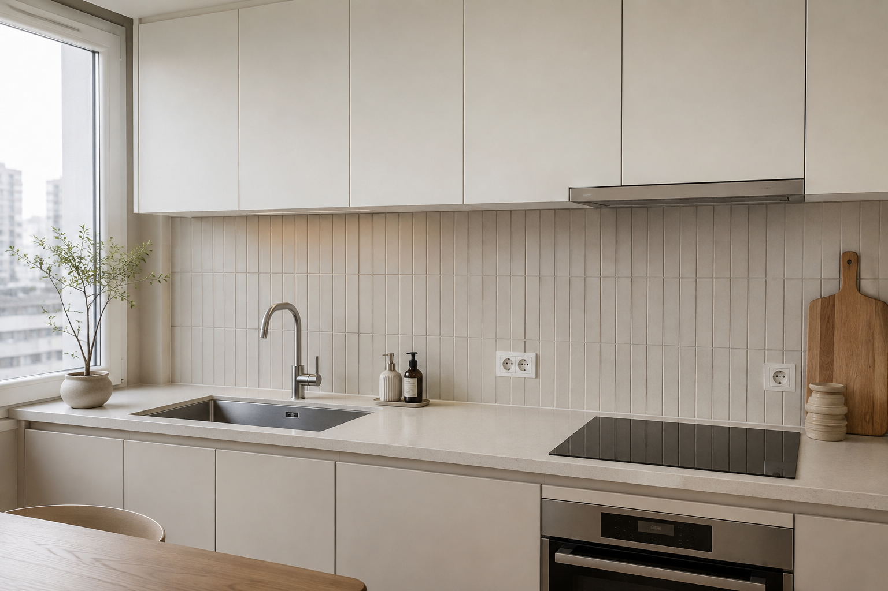

스타일 제안 이미지SPACE GUIDE보기 좋은 재료보다
보기 좋은 재료보다
맞는 조건부터 찾습니다.
같은 타일도 설치되는 공간에 따라 요구되는 성능과 관리 방식이 달라집니다. 자주 생기는 고민과 확인 기준을 공간별로 정리했습니다.
SELECTION POINT공간별로 달라지는
공간별로 달라지는
네 가지 질문.
타일 색과 무늬를 고르기 전에 아래 조건을 답하면 불필요한 선택지를 줄일 수 있습니다.
물이 닿나요?
물 사용과 배수 여부에 따라 표면과 구배, 접점 처리가 달라집니다.
얼마나 자주 걷나요?
보행량과 신발 착용 여부는 내구성과 미끄럼 조건에 영향을 줍니다.
무엇과 만나나요?
가구, 상판과 마루 등 주변 재료의 두께와 끝선을 함께 맞춥니다.
어떻게 관리하나요?
오염 종류와 청소 습관을 고려해 표면과 줄눈색을 검토합니다.
공간 전체와 바닥·벽의 접점을 찍어주세요.
지역과 원하는 시기를 함께 보내면 먼저 확인할 항목을 안내합니다.